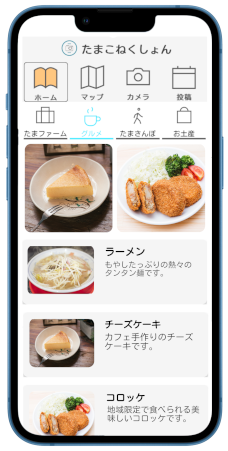
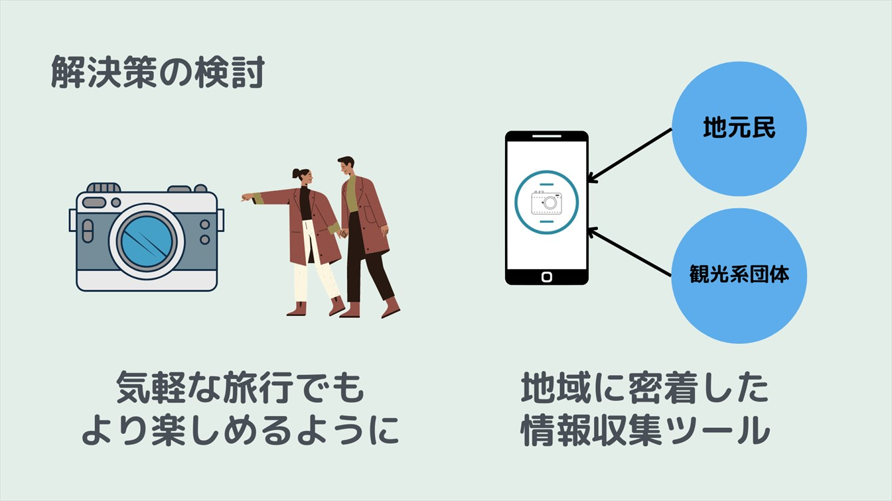
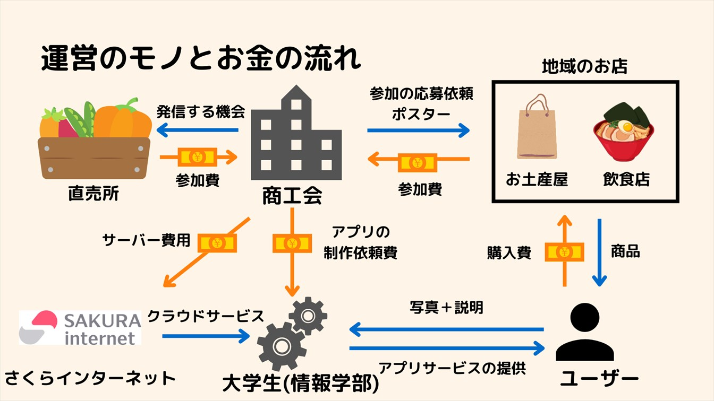

自己PR
私は大学2年生で多摩マイクロツーリズムに参加した。これは多摩地域の魅力を活かした新たなサービスを作成して多摩地域を活性化を目指す官民一体となったプロジェクトである。私たちはこれらのプロジェクトで多摩地域の魅力を発信する写真投稿アプリを開発した。

これらのプロジェクトでは多摩地域ならではの魅力やユーザーのニーズを理解してどのように旅行を楽しめるような付加価値を加えられるのかをグループメンバーと話し合いどのような機能が必要でどのようなものとお金の流れで運営するのかのビジネスモデルを検討した。このような活動の中でユーザーのニーズを元にソフトウェアの開発を行う難しさや楽しさについて学んだ。
紹介動画

多摩地域の豊かな自然やご当地グルメなど沢山の魅力が日々発信されている。これらの魅力をユーザーへ伝えるためにはどのようなアプリの機能を搭載すればよいのかを考えた。また多摩地域で開発したアプリをサービスとしてどのように利用してもらいながら利益をどのように得るのかを考えた。

私はチームリーダーとしてこれらのアイデアを出しながら意見をまとめて分かりやすくプレゼンを行うことで優秀賞を受賞することができた。受賞後も賛同していただいた企業と連携しサービスを運営していく中で具体的なサービスの作り方を体験しながら学ぶことができた。